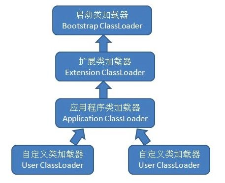
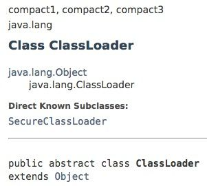
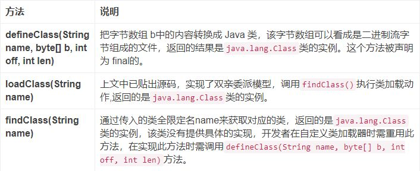
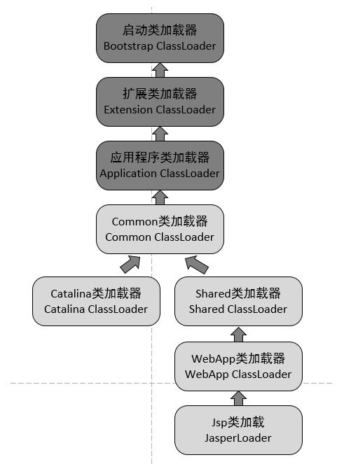

虚拟机设计团队把类加载阶段中的“通过一个类的全限定名来获取描述此类的二进制字节流(即字节码)”这个动作放到Java虚拟机外部去实现，以便让应用程序自己决定如何去获取所需要的类。实现这个动作的代码模块称为“类加载器”。
一般来说，Java 虚拟机使用 Java 类的方式如下：
java.lang.Class类的一个实例。每个这样的实例用来表示一个 Java 类。通过此实例的 newInstance()方法就可以创建出该类的一个对象。实际的情况可能更加复杂，比如 Java 字节代码可能是通过工具动态生成的，也可能是通过网络下载的。更详细的内容可以参考上一篇文章中讲类加载过程中的加载阶段时介绍的几个例子（JAR包、Applet、动态代理、JSP等）。
类加载器虽然只用于实现类的加载动作，但它在Java程序起到的作用却远大于类加载阶段。对于任意一个类，都需要由加载它的类加载器和这个类本身一同确立其在Java虚拟机中的唯一性，每一个类加载器，都拥有一个独立的类名称空间。通俗而言：比较两个类是否“相等”（这里所指的“相等”，包括类的Class对象的equals()方法、isAssignableFrom()方法、isInstance()方法的返回结果，也包括使用instanceof()关键字对做对象所属关系判定等情况），只有在这两个类时由同一个类加载器加载的前提下才有意义，否则，即使这两个类来源于同一个Class文件，被同一个虚拟机加载，只要加载它们的类加载器不同，那这两个类就必定不相等。
从jvm的角度来讲，只存在以下两种不同的类加载器：
java.lang.ClassLoader。从Java开发人员的角度看，类加载器可以划分得更细致一些：
<JAVA_HOME>\lib 目录中的，或者被 -Xbootclasspath 参数所指定的路径中的，并且是虚拟机识别的（仅按照文件名识别，如 rt.jar，名字不符合的类库即使放在lib 目录中也不会被加载）类库加载到虚拟机内存中。ExtClassLoader（sun.misc.Launcher$ExtClassLoader）实现的。它负责将<Java_Home>/lib/ext或者被 java.ext.dir系统变量所指定路径中的所有类库加载到内存中，开发者可以直接使用扩展类加载器。AppClassLoader（sun.misc.Launcher$AppClassLoader）实现的。由于这个类加载器是ClassLoader中的getSystemClassLoader()方法的返回值，因此一般称为系统类加载器。由开发人员开发的应用程序都是由这三种类加载器相互配合进行加载的，如果有必要，还可以加入自己定义的类加载器。这些类加载器的关系一般如下图所示：

上图展示的类加载器之间的层次关系，称为类加载器的双亲委派模型（Parents Delegation Model）。该模型要求除了顶层的启动类加载器外，其余的类加载器都应有自己的父类加载器，这里类加载器之间的父子关系一般通过组合（Composition）关系来实现，而不是通过继承（Inheritance）的关系实现。
工作过程
如果一个类加载器收到了类加载的请求，它首先不会自己去尝试加载，而是把这个请求委派给父类加载器，每一个层次的加载器都是如此，依次递归，因此所有的加载请求最终都应该传送到顶层的启动类加载器中，只有当父加载器反馈自己无法完成此加载请求（它搜索范围中没有找到所需类）时，子加载器才会尝试自己加载。
优点
使用双亲委派模型来组织类加载器之间的关系，使得Java类随着它的类加载器一起具备了一种带有优先级的层次关系。例如类java.lang.Object，它存放再rt.jar中，无论哪个类加载器要加载这个类，最终都是委派给处于模型最顶端的启动类加载器进行加载，因此Object类在程序的各种类加载器环境中都是同一个类。
相反，如果没有双亲委派模型，由各个类加载器自行加载的话，如果用户编写了一个称为｀java.lang.Object的类，并放在程序的ClassPath中，那系统中将会出现多个不同的Object类，程序将变得一片混乱。如果开发者尝试编写一个与rt.jar类库中已有类重名的Java类，将会发现可以正常编译，但是永远无法被加载运行。
双亲委派模型的实现如下：
protected synchronized Class<?> loadClass(String name,boolean resolve)throws ClassNotFoundException{
//check the class has been loaded or not
Class c = findLoadedClass(name);
if(c == null){
try{
if(parent != null){
c = parent.loadClass(name,false);
}else{
c = findBootstrapClassOrNull(name);
}
}catch(ClassNotFoundException e){
//if throws the exception ,the father can not complete the load
}
if(c == null){
c = findClass(name);
}
}
if(resolve){
resolveClass(c);
}
return c;
}
双亲委派模型并不能解决 Java 应用开发中会遇到的类加载器的全部问题。Java 提供了很多服务提供者接口（Service Provider Interface，SPI），允许第三方为这些接口提供实现。常见的 SPI 有 JDBC、JCE、JNDI、JAXP 和 JBI 等。这些 SPI 的接口由 Java 核心库来提供，如 JAXP 的 SPI 接口定义包含在 javax.xml.parsers包中。
这些 SPI 的实现代码很可能是作为 Java 应用所依赖的 jar 包被包含进来，可以通过类路径（ClassPath）来找到，如实现了 JAXP SPI 的 Apache Xerces所包含的 jar 包。SPI 接口中的代码经常需要加载具体的实现类。如 JAXP 中的 javax.xml.parsers.DocumentBuilderFactory类中的 newInstance() 方法用来生成一个新的 DocumentBuilderFactory 的实例。
这里的实例的真正的类是继承自 javax.xml.parsers.DocumentBuilderFactory，由 SPI 的实现所提供的。如在 Apache Xerces 中，实现的类是 org.apache.xerces.jaxp.DocumentBuilderFactoryImpl。
而问题在于，SPI 的接口是Java 核心库的一部分，是由引导类加载器加载的，而SPI 实现的 Java 类一般是由系统类加载器加载的。引导类加载器是无法找到 SPI 的实现类的，因为它只加载 Java 的核心库。
它也不能委派给系统类加载器，因为它是系统类加载器的祖先类加载器。也就是说，类加载器的双亲委派模型无法解决这个问题。
为了解决这个问题，Java设计团队只好引入了一个不太优雅的设计：线程上下文类加载器（Thread Context ClassLoader）。
线程上下文类加载器是从 JDK 1.2 开始引入的。类 java.lang.Thread中的方法 getContextClassLoader()和 setContextClassLoader(ClassLoader cl)用来获取和设置线程的上下文类加载器。
如果没有通过 setContextClassLoader(ClassLoader cl)方法进行设置的话，线程将继承其父线程的上下文类加载器。Java 应用运行的初始线程的上下文类加载器是应用程序类加载器。在线程中运行的代码可以通过此类加载器来加载类和资源。
有了线程上下文类加载器，就可以做一些“舞弊”的事情了，JNDI服务使用这个线程上下文类加载器去加载所需要的SPI代码，也就是父类加载器请求子类加载器去完成类加载器的动作，这种行为实际上就是打通了双亲委派模型的层次结构来逆向使用类加载器，已经违背了双亲委派模型的一般性原则。
这里所说的“动态性”指的是当前一些非常热门的名词：代码热替换（HotSwap）、模块热部署(Hot Deployment)等。即希望应用程序能像计算机的外设一样，接上鼠标、键盘，不用重启就能立即使用，鼠标出了问题或需要升级就换个鼠标，不用停机或重启。
当前业界“事实上”的Java模块化标准是OSGi，而OSGi实现代码热部署的关键则是它自定义的类机载器的实现。关于OSGi的细节将在稍后的案例分析中详细讲解。
API

其中有如下三个比较重要的方法

在了解完上述内容后，我们可以容易地意识到自定义类加载器有以下两种方式：
findClass(String name)方法，而不需重写loadClass(String name)方法。loadClass(String name)方法。下面我们来实现一个自定义类加载器，用来加载存储在文件系统上的 Java 字节代码。
public class FileSystemClassLoader extends ClassLoader {
private String rootDir;
public FileSystemClassLoader(String rootDir) {
this.rootDir = rootDir;
}
@Override
protected Class<?> findClass(String name) throws ClassNotFoundException {
byte[] classData = getClassData(name);
if (classData == null) {
throw new ClassNotFoundException();
}
else {
return defineClass(name, classData, 0, classData.length);
}
}
private byte[] getClassData(String className) {
String path = classNameToPath(className);
try {
InputStream ins = new FileInputStream(path);
ByteArrayOutputStream baos = new ByteArrayOutputStream();
int bufferSize = 4096;
byte[] buffer = new byte[bufferSize];
int bytesNumRead = 0;
while ((bytesNumRead = ins.read(buffer)) != -1) {
baos.write(buffer, 0, bytesNumRead);
}
return baos.toByteArray();
} catch (IOException e) {
e.printStackTrace();
}
return null;
}
private String classNameToPath(String className) {
return rootDir + File.separatorChar
+ className.replace('.', File.separatorChar) + ".class";
}
}
类 FileSystemClassLoader的 findClass()方法首先根据类的全名在硬盘上查找类的字节代码文件（.class 文件），然后读取该文件内容，最后通过 defineClass()方法来把这些字节代码转换成 java.lang.Class类的实例。
主流的Java Web服务器如Tomcat、Jetty、WebLogic、WebSphere等等，都实现了自己定义的类加载器（一般都不止一个）。因为一个功能健全的Web服务器，要解决以下问题：
鉴于上述问题，各种Web服务器都不约而同地提供了数个ClassPath路径供用户存放第三方类库，这些路径一般以“lib”或“classes”命名。以Tomcat为例，有3组目录（“/common/* ”、“/server/* ”和“/shared/* ”）可以存放Java类库，另外还可以加上Web应用程序自身的目录“/WEB-INF/* ”，一共4组，把Java类库放置在这些目录中的含义分别如下：
为了支持这套目录结构，并对目录里的类库进行加载和隔离，Tomcat采用如下经典的双亲委派模型来实现了多个类加载器：

CommonClassLoader、CatalinaClassLoader、SharedClassLoader和WebappClassLoader是Tomcat自己定义的类加载器，它们分别加载/common/* 、/server/*、/shared/**和/WebApp/WEB-INF/*中的Java类库。其中WebApp类加载器和JSP类加载器通常会存在多个实例，每一个Web应用程序对应一个WebApp类加载器，每一个JSP文件对应一个JSP类加载器。
CommonClassLoader能加载的类都可以被CatalinaClassLoader和SharedClassLoader使用，而CatalinaClassLoader和SharedClassLoader自己能加载的类则与对方相互隔离。WebAppClassLoader可以使用SharedClassLoader加载到的类，但各个WebAppClassLoader实例之间相互隔离。而JasperLoader的加载范围仅是这个JSP文件编译出来的那一个Class，它出现的目的就是被丢弃。当服务器检测到JSP文件被修改时，会替换掉目前的JasperLoader的实例，并通过再建立一个新的JSP类加载器来实现JSP文件的HotSwap功能。
特殊场景
前文提到过一个场景，如果有5个Web应用程序都是用Spring来进行组织和管理的话，可以把Spring放到Common或Shared目录下让这些程序共享。Spring要对用户程序的类进行管理，自然要能访问到用户程序的类，而用户程序放在/WebApp/WEB-INF目录中，这时就需要破坏双亲委派模型，使用线程上下文类加载器来完成这一工作了。
OSGi（Open Service Gateway Initiative）是OSGi联盟制定的一个基于Java语言的动态模块化规范，现在成为了Java“事实上”的模块化标准。它为开发人员提供了面向服务和基于组件的运行环境，并提供标准的方式用来管理软件的生命周期。OSGi 已经被实现和部署在很多产品上，在开源社区也得到了广泛的支持，其中最为著名的应用莫过于大家都很熟悉的Eclipse IDE。
OSGi 中的每个模块（bundle）都包含 Java Package和Class。模块可以声明它所依赖的需要导入（import）的其它模块的 Java 包和类（通过 Import-Package），也可以声明导出（export）自己的包和类，供其它模块使用（通过 Export-Package）。也就是说需要能够隐藏和共享一个模块中的某些 Java 包和类。这是通过 OSGi 特有的类加载器机制来实现的。
OSGi 中的每个模块都有对应的一个类加载器，它负责加载模块自己包含的 Java 包和类。当它需要加载 Java 核心库的类时（以 java开头的包和类），它会代理给父类加载器（通常是启动类加载器）来完成。当它需要加载所导入的 Java 类时，它会代理给导出此 Java 类的模块来完成加载。模块也可以显式的声明某些 Java 包和类，必须由父类加载器来加载。只需要设置系统属性 org.osgi.framework.bootdelegation的值即可。
假设有两个模块 bundleA 和 bundleB，它们都有自己对应的类加载器 ClassLoaderA 和 ClassLoaderB。在 bundleA 中包含类 com.bundleA.Sample，并且该类被声明为导出的，也就是说可以被其它模块所使用的。
bundleB 声明了导入 bundleA 提供的类 com.bundleA.Sample，并包含一个类 com.bundleB.NewSample继承自 com.bundleA.Sample。在 bundleB 启动的时候，其类加载器 classLoaderB 需要加载类 com.bundleB.NewSample，进而需要加载类 com.bundleA.Sample。
由于 bundleB 声明了类 com.bundleA.Sample是导入的，classLoaderB 把加载类 com.bundleA.Sample的工作代理给导出该类的 bundleA 的类加载器 ClassLoaderA。ClassLoaderA 在其模块内部查找类 com.bundleA.Sample并定义它，所得到的类 com.bundleA.Sample实例就可以被所有声明导入了此类的模块使用。
对于以 java开头的类，都是由父类加载器来加载的。
如果声明了系统属性 org.osgi.framework.bootdelegation=com.example.core.*，那么对于包 com.example.core中的类，都是由父类加载器来完成的。
OSGi 模块的这种类加载器结构，使得一个类的不同版本可以共存在 Java 虚拟机中，带来了很大的灵活性。不过它的这种不同，也会给开发人员带来一些麻烦，尤其当模块需要使用第三方提供的库的时候。下面提供几条比较好的建议：
Thread.currentThread().getContextClassLoader()就可以得到该类加载器。该类加载器应该是该模块对应的类加载器。如果不是的话，可以首先通过 class.getClassLoader()来得到模块对应的类加载器，再通过 Thread.currentThread().setContextClassLoader()来设置当前线程的上下文类加载器。
本人免费整理了Java高级资料，涵盖了Java、Redis、MongoDB、MySQL、Zookeeper、Spring Cloud、Dubbo高并发分布式等教程，一共30G，需要自己领取。
传送门：https://mp.weixin.qq.com/s/JzddfH-7yNudmkjT0IRL8Q